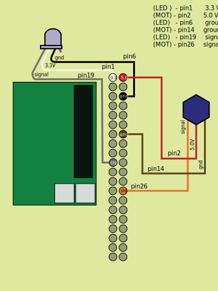

Preparazione scheda micro-SD
-
Procurarsi una scheda micro-SD con almeno 16 GB di memoria e collegarla al computer
-
Scaricare questo file immagine disco
-
Installare il software Etcher
-
Dopo aver aperto Etcher, usare "select image" per selezionare l'immagine disco precedentemente
scaricata, poi "select drive" per indicare la lettera corrispondente alla schedina micro-SD inserita nel
computer, infine "flash" per scrivere l'immagine (ci metterà un po' di tempo)
Configurazione dei PIN del TJBot
